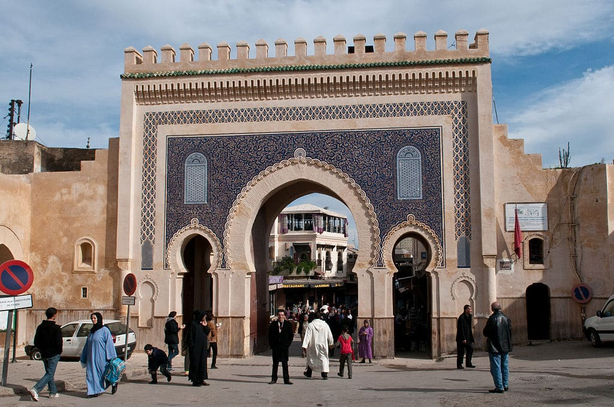

« Intégration des TICE en cours de langue »
En utilisant les outils numériques (quiz, vidéo, plateforme)
La Boîte à Merveilles est un roman autobiographique écrit par Ahmed Sefrioui. Cette œuvre raconte les souvenirs d’enfance du narrateur dans la médina de Fès.
Le chapitre 1 présente la vie quotidienne du jeune narrateur, son école coranique, sa famille et son monde imaginaire.
Le narrateur décrit sa vie à Fès, son école coranique et son attachement à sa boîte à merveilles.
Le premier chapitre présente l’univers traditionnel de la médina de Fès. Ahmed Sefrioui utilise un style autobiographique riche en descriptions.
Le thème dominant est l’enfance et l’imagination. La boîte à merveilles représente un refuge symbolique pour le narrateur.